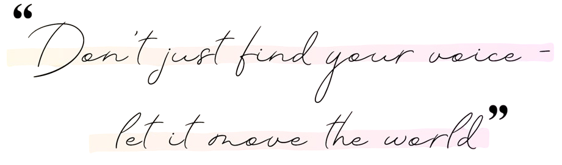
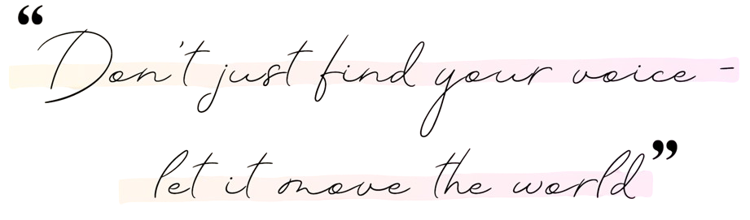
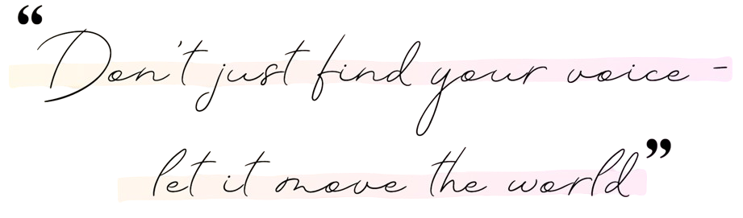

The Sound of Becoming
 


The Sound of Becoming

It all began with an earworm — the theme from Barbie in the 12 Dancing Princesses.
I had never touched a piano before, but humming it wasn’t enough. Something inside me needed to bring it to life.
So I went downstairs, opened the piano, and began pressing random keys, trying to make sense of the layout. Then… I played the last three keys on the piano — and they matched the first three notes of the song in my head.
Something clicked.
Within minutes, I had figured out the entire piece by ear.
I still remember that moment vividly — like a door had opened to a world I never knew existed.
That was the day music quietly became a part of me.
Eventually, my sister and I were both sent to piano lessons with several teachers.
But instead of feeling inspired, I began to feel disconnected.
I loved playing by ear — chasing a feeling, letting my fingers find the notes naturally. But in class, I was told I was “slow” because I didn’t take to music theory the same way I did to free playing.
And there were comparisons — subtle, but sharp — to my sister, who learnt music theory faster than I did.
I never reached the point of being formally given sheet music in class. Instead, I borrowed my sister’s in secret and taught myself the songs she was learning.
Over time, I began to believe I just wasn’t cut out for music.
What I once loved started to feel like a chore.
Eventually, I walked away — not out of lack of love, but out of heartbreak.
Even though I had stopped playing the piano, music never truly left me. I began to sing — quietly, in secret, unsure if my voice was worth being heard.
When the school talent show came around, my friends and I formed a group and auditioned for a song together. We were thrilled to be selected. In the weeks before the show, we would meet at each other’s houses to practise. During one rehearsal at my house, I was compared to another girl in our group because I wasn’t dancing around as much as her while singing. The comment wasn’t about my voice — it was about something else entirely. And though it might have seemed small, it touched an old wound. Another comparison. Another chip at my self-esteem.
The following year, we auditioned again as a group, but didn’t get in. Later, I heard a comment that we hadn’t been chosen because of me and another girl. Already carrying self-doubt, those words sank deep.
By my final year, the talent show felt like my last chance. I told myself, If I don’t get in, so what? At least I’ll leave knowing I tried. We auditioned again — the same group, without the person who had made that comment — performing the exact same song that hadn’t been selected before. This time, we got in. And for the first time, I also auditioned for a solo. That year, only two solos were chosen… and one of them was mine.
. I didn’t need to defend myself or respond to anything I’d heard in the past. The performance itself was my answer.
That night, standing on the stage under the spotlight, both in the group and alone with a microphone in my hands, there were no nerves, no fear— just a deep sense of knowing that I was exactly where I was meant to be
These experiences taught me something valuable ever since: true confidence doesn’t need to shout. And insecurity often does. Sometimes, you’ll be surrounded by people who can’t see your worth because it doesn’t look like what they expect — maybe you’re not the loudest in the room, or the most outwardly expressive.
That doesn’t make your gifts any less real.
After graduating school, I moved to Australia in 2019 for my higher studies.
In early 2022, life shifted unexpectedly — I fractured my femur and became bedridden. Everything slowed down… except music.
For our 5th anniversary, my partner gifted me a digital piano. At first, I played just to pass the time. But soon, something shifted. I returned to the way I played as a child — no rules, no theory, no one to compare me. Just ear, feeling, and freedom. An unconventional technique, perhaps, but it was mine. And that’s when I realised: maybe convention isn’t always the best path. Maybe it’s worth questioning the “right” way and finding your way.
I started challenging myself to figure out songs by ear — quickly. At first, it was just a game. Then I began experimenting with sounds, layering feelings into melodies. Slowly, original music began to flow.
Featherfall, my debut single, was actually the tenth melody I wrote during recovery. I produced and mixed it entirely on free software. It wasn’t perfect, but it was honest. I wasn’t planning to release it — but the people who matter the most to me believed in it… and in me. So I did.

If you’ve ever been told you’re not enough, or quietly stepped away from something you love because you felt you didn’t belong, I hope my story reminds you of this: it’s never too late to return. Your worth is not defined by comparisons, rumours, or the volume of your presence. True confidence is quiet — it lives in the way you keep showing up, in the work you pour your heart into, in the courage to try again when the world tells you no. I learned that other people’s opinions are often just reflections of their own insecurities. They’re not your reality. And you don’t need to prove them wrong with arguments — you can prove yourself right with action. While they speak, you keep building. Keep showing up. Keep creating. Music has taught me that you don’t have to follow someone else’s blueprint to create something beautiful. The most unconventional paths often lead to the most authentic places. Sometimes, the “right” way is simply the way that feels true to you. So, if you’re holding back, waiting for the perfect moment — take the step now. Let your actions speak for you. Let your presence be felt in the way you create, in the way you grow, in the way you live unapologetically as yourself. There’s so much more to come — new music, raw stories, and melodies that speak where words can’t. If this resonates with you, stay. Listen. Feel. Let’s grow through sound, together. ✨
With you, always - Jana ♡